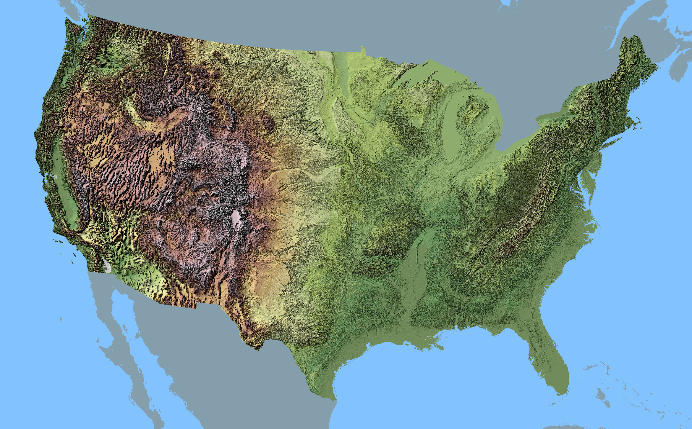

<!DOCTYPE html>
<link rel="stylesheet" type="text/css" href="grts-style.css">
<!-- <div class='map-nav'><svg width="960" height="600"></svg></div> -->
<div class='map-nav'><svg width="960" height="600" shape-rendering="crispedges" ></svg></div>
<!-- 
<svg class='map-nav' shape-rendering="crispedges" width="960" height="600" xmlns="http://www.w3.org/2000/svg">
  <defs>
  <pattern id="grid" x="0" y="0" width="2" height="2" patternUnits="userSpaceOnUse">
    <rect x="0" y="0" width="2" height="2" fill="none" stroke-width="0.3px" stroke="#999"/>
    </pattern>
  </defs>
  <rect fill="url(#grid)" stroke="black" width="960" height="600"/>
  </svg> -->
<!-- </img> -->
<script src="https://d3js.org/d3.v4.min.js"></script>
<script src="https://d3js.org/topojson.v3.min.js"></script>
<script>
let svg = d3.select("svg");

let path = d3.geoPath();
d3.json("us-maps/us-10m.v1.json", function(error, us) {
  if (error) throw error;
  const projection = d3.geoMercator();
  svg.append("g")
    .attr('shape-rendering', 'geometricprecision')
    .attr("class", "states")
    .selectAll("path")
    .data(topojson.feature(us, us.objects.states).features)
    .enter().append("path")
    .attr("d", path)

  svg.append("g")
    .attr('shape-rendering', 'geometricprecision')
    .attr("class", "counties")
    .selectAll("path")
    .data(topojson.feature(us, us.objects.counties).features)
    .enter().append("path")
    .attr("d", path)

  svg.append("g")
    .attr('shape-rendering', 'geometricprecision')
    .attr("class", "nation")
    .selectAll("path")
    .data(topojson.feature(us, us.objects.nation).features)
    .enter().append("path")
    .attr("d", path)
    .attr('fill', 'url(#grid)')
    .attr('stroke', '#ffffff00')
    .attr('transform', 'translate(0.59,-0.48)')

/*svg.append('defs')
.append('pattern')
.attr('id', 'grid')
.attr('x', '0')
.attr('y', '0')
.attr('width', '2.0046532000206')
.attr('height', '2.0118748349721')
.attr('patternUnits', 'userSpaceOnUse')
.append('rect')
.attr('x', '0')
.attr('y', '0')
.attr('width', '2.0046532000206')
.attr('height', '2.0118748349721')
.attr('fill', 'none')
.attr('stroke', '#999')
.attr('stroke-width', '0.3px')*/
/*svg.append('circle')
.attr('fill', 'url(#grid)')
.attr('stroke', '#999')
.attr('cx', '480')
.attr('cy', '300')
.attr('r', '300px')
.attr('transform', 'translate(0.59,-0.48)')*/
  

 /*d3.json("fulldec14topo.json?q=39", function(error, us) {
    if (error) {
      throw error;
    }
    svg.append("g")
      .attr("class", "grts")
      .attr("shape-rendering","geometricprecision")
      .selectAll("path")
      .data(topojson.feature(us, us.objects.grts).features)
      .enter().append("path")
        .attr("d", path)
  })*/
  /*
  d3.json("q2topo.json?q=39", function(error, us) {
    if (error) {
      throw error;
    }
    svg.append("g")
      .attr("class", "grts2")
      .attr("shape-rendering","geometricprecision")
      .selectAll("path")
      .data(topojson.feature(us, us.objects.grts).features)
      .enter().append("path")
        .attr("d", path)
  })
  */

})

</script>
